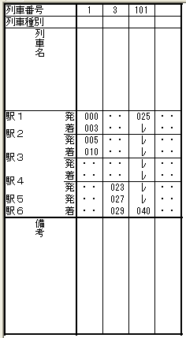
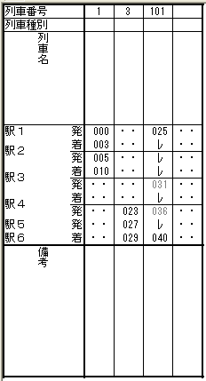

時刻表ビューに列車を入力する場合は、路線の起点から終点までの全区間に、少なくとも下り・上り各１本の各駅停車を入力するようにしてください。
OuDia のダイヤグラムビューは、隣り合う２つの駅の間の（上下の）幅を、各駅停車の最速所要時間をもとに決定します（この所要時間を、『駅間最小所要秒数』と呼びます）。各駅停車が入力されていない区間では、駅の間の幅が決定できません（『駅間最小所要秒数』が算出できない）。このため、ダイヤグラムビューを表示したときには、その区間のダイヤグラムは不自然な形状（垂直線など）になってしまいます。
ただし、起点から終点までの直通の各駅停車を設定する必要はありません。たとえば、起点がＡ駅・終点がＺ駅の路線があった場合、
の２本を入力することによっても、「路線の起点から終点までの全区間に、各駅停車を入力」したことになります。
この例では、駅１〜駅３までの各駅停車と駅３〜駅６までの２本の各駅停車が設定されています。これは、「路線の起点から終点までの全区間に、各駅停車を入力」した状態とみなされます。

この例では、駅３〜駅４の区間に、各駅停車の入力がありません。
この場合、ダイヤグラムビューでは、駅３〜駅４の間の幅が決定できない（『駅間最小所要秒数』が決定できない）ため、ダイヤグラムは不自然な形状になります。
全区間に各駅停車の入力をしているのに、ダイヤグラムが不自然な形状(垂直線など)になっている場合は、メニューコマンド [表示]-[更新] をクリックしてください。これにより、『駅間最小所要秒数』は再計算され、ダイヤグラムの形状が改善されます。
【補足】
OuDiaのダイヤグラムビューが２つの駅の間の（上下の）幅(『駅間最小所要秒数』）を計算するのは、以下の場合です。
列車の入力のたびに『駅間最小所要秒数』の再計算を行っているのではありません。
- ダイヤグラムビューが開かれたとき
- メニューコマンド [表示]-[更新] をクリックしたとき
このため、不自然な形状の列車線を表示しているダイヤグラムビューを開いたまま、時刻表ビューで各駅停車の新規入力・時刻修正を行っても、『駅間最小所要秒数』は再計算されず、不自然な列車線が追加されます。
路線によっては、各駅停車がない（ある駅を全列車が通過する）区間が存在します。
たとえば、JR東日本の常磐線の偕楽園駅は、停車するのは観梅の季節の下り列車だけです。偕楽園に停車する上り列車は一本もありません。つまり、偕楽園駅をはさむ赤塚駅〜水戸駅間には、上りの各駅停車が存在しないことになります。
この場合は、停車列車のない通過駅に [着時刻]・[発時刻] のいずれかを入力してください。 OuDia は、各駅停車がない駅間では、通過駅の駅時刻をもとに『駅間最小所要秒数』を計算し、駅間の幅を適切にします。これにより、ダイヤグラムが整形されます。
この例では、駅３〜駅４の区間に、各駅停車の入力がありません。
しかし、列車番号 101 の列車には、駅３と駅４の通過時刻が設定されているため、OuDia はこれをもとに、駅３と駅４の間の所要秒数を300秒（５分）に決定します。